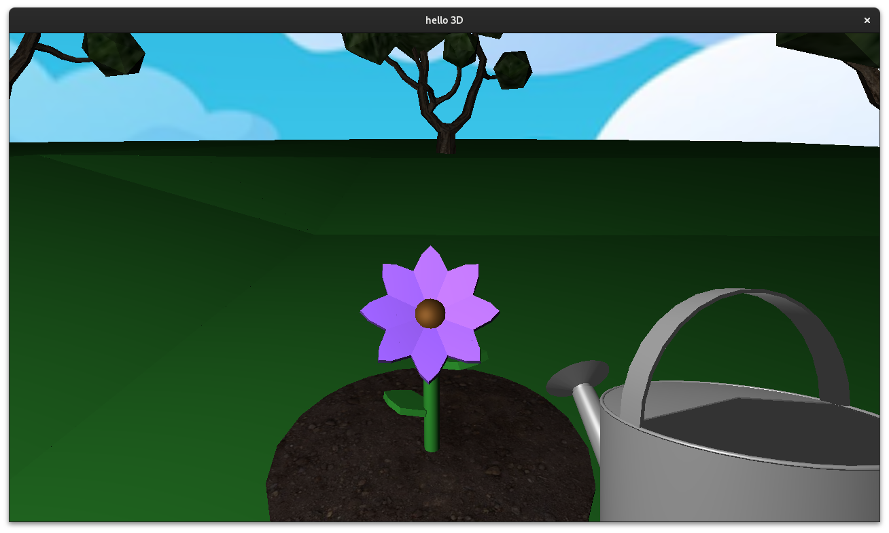
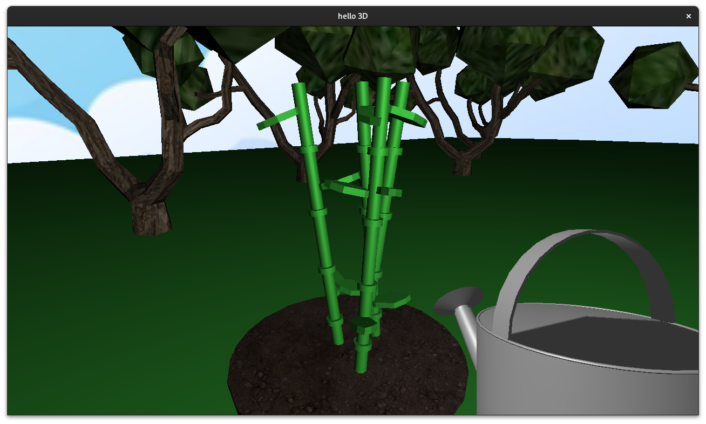

CSC 471 Final Project
Ryan Dostalek
Project Description
For my final project, I created a gardening simulator that includes two plants: a flower, and bamboo. The player can approach a plant and water it to make it grow in three stages.


Graphics Technologies Used
- Environment
- Trees
- Ground Plane
- Skybox
- Lighting
- Point Light
- Blinn-Phong Shading
- Hierarchially Modeled Flower
- Game Camera
- Spatial Reasoning
- Collision Detection w/ Trees
- Minimum Interact Distance w/ Plants
- Linear Interpolation
- Player Movement
- Object Animation
- Bezier Curve Cutscene
Controls
- WASD to Move Around
- Mouse to Look Around
- F to Use Watering Can
- G to Play Bezier Curve Cutscene
- Q to Simulate Day/Night Cycle
Resources